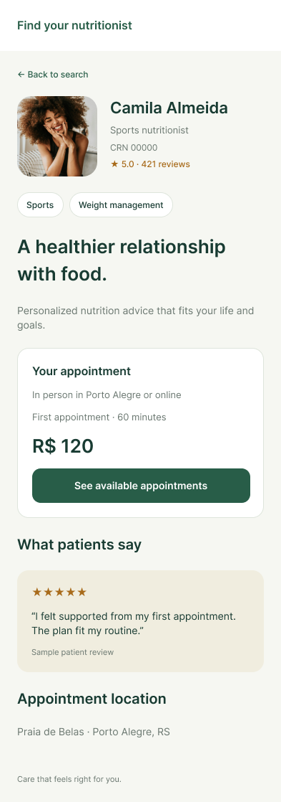
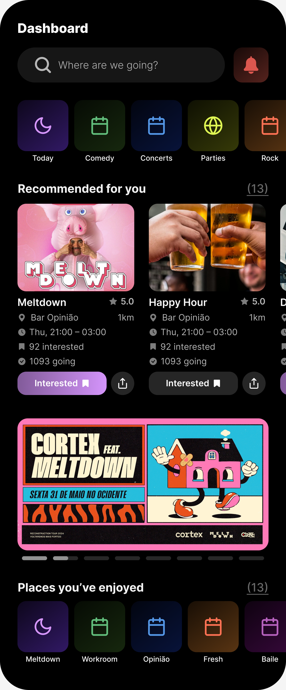

Senior Product Designer
from direction to delivery.

Loopt Yard
Bringing order to the container yard
From field research to an operator application built from scratch. The experience remains in daily use.
Sole designer · Research to delivery


Find Your Nutritionist
From browsing to booking
Understanding why people leave before booking, and reshaping the experience around how they choose.
Research & design lead · Mobile experience
Leap / SAP Brazil
A career worth exploring
Career development as an explorable world. Three career tracks, shaped through five rounds of testing.
Solo designer · Research & interaction design
SmartYard
The bigger picture behind every move
A shared view of the yard, connecting individual movements to the decisions that shape the operation.
Staff Product Designer · Operational workflows
Bonde
Alive and on brand
Animations authored in After Effects and delivered as interaction-ready assets for implementation in code.
Motion design · Development-ready delivery


Fiero
Every point has a little personality
An expressive mobile interface for challenges, scores, and friendly competition.
Interface design · Animation & microinteractions
I shape product direction, prototype with AI, and build alongside engineers.
I’m Brenda, a product designer based in Brussels. My work connects research, interaction design, and hands-on prototyping, from understanding a problem to the details of what gets built.
I like moving between the big picture and the small details: listening, making connections, trying things out, and refining them with a team. I also share what I learn through workshops and mentoring.
Explore my journeyApproach
Get close to the work
Understand what people are trying to do and the conditions they work in. Interviews, observation, and usage patterns give the design direction something real to stand on.
Make ideas tangible
Turn a direction into something we can see, use, and test. I use prototypes and AI-assisted exploration to work through possibilities and learn through making.
Build alongside the team
Stay close to engineering as the product takes shape. Work through the behaviour, the constraints, and the details that turn an idea into a usable experience.
Keep learning after launch
Observe what happens in daily use. Feedback and real behaviour help reveal what to refine, what to add, and where the experience can go next.
Loopt Yard
Bringing order to the container yard
Find Your Nutritionist
From browsing to booking
Leap / SAP Brazil
A career worth exploring
SmartYard
The bigger picture behind every move
Bonde
Alive and on brand

Fiero
Every point has a little personality

ROLE
Your city. Your next night out.

Millie
A clearer picture of every child’s care